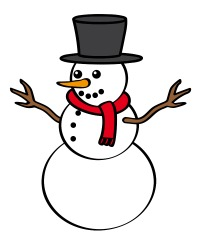

Important People
Santa
Santa Claus is the head of the whole North Pole Operation. He is known for his white beard, red suit, and jolly appetite for life (and cookies). He can be seen in the North Pole petting reindeer, laughing with elves, and watching Game of thrones with his wife, Mrs. Claus. He is the king kong of Christmas.
Mrs. Claus
Mrs. Claus is the Christmas queen. She is married to Santa Claus. She is responsible for making the cookies, and mending Santa's classic red suit. She loves the snow, and is the top bobsledder in the Pole. She received her PHD in Psychology.
Elf
This elf represents all elves in the North Pole. They are all kind, courteous, and love to party. They enjoy picking candy canes, and making toys for all the kids on Santa's nice list. They can be found normally dressed in red and green.
Reindeer
Reindeer are the key to the sky for Santa. They make the yearly journey possible. Each reindeer has their own strengths, and set of jingle bells which they wear every Christmas Eve.

Snowman
Snowman is a man of precipitation. He is the book keeper of the North Pole. He makes sure that all the elves and reindeer get fair wages. He also takes part in all of the public works projects going on in the North Pole.